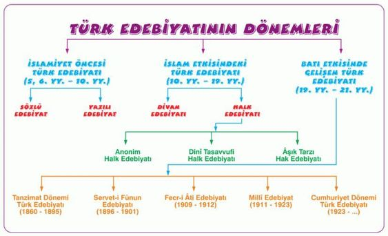
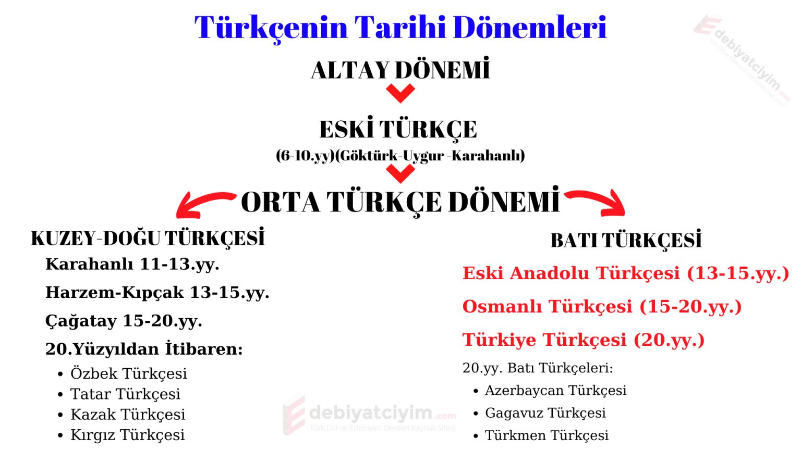

TÜRK DİLİ VE EDEBİYATINA GİRİŞ
Edebiyat-Tarih İlişkisi
Tarih bilimi, bir olayın sebeplerini ve sonuçlarını objektif olarak aktarırken edebiyat ise bu olayın
toplum üzerindeki her türlü etkisini ve arka planda kalan her şeyi aktarır.
Tarih ilişkisini özet olarak şu şekilde toparlayabiliriz:
→ Her edebi eser yazıldığı dönemin izlerini taşır, dolayısıyla bir edebi eser zamanla dönemini
yansıtan bir tarihi belge niteliği kazanır. Tarih, dönemin olaylarını bizlere aktarır ancak o olayın
duygusal yönünü tamamlayan yani tarihin içini dolduran edebiyattır.
→ Edebi eser, yazıldığı dönemi yansıttığından bir eseri incelerken dönemin
tarihi şartlarını bilmek gerekir.
Yukarıdaki iki madde edebiyat-tarih ilişkisini net bir şekilde ifade eder.
Eser yazıldığı dönemi yansıttığından tarihi araştırmalara kaynaklık edebilir.
Aynı şekilde bir eseri incelerken de tarih biliminden yararlanılır.
Örneğin “Göktürk Yazıtları”na bakarak biz o dönemin yaşam anlayışını,
şartlarını, savaşlarını ve mücadelelerini de görmüş oluruz.
→ Geçmişten günümüze kadar yazılmış olan edebi eserleri ve edebi oluşumları “Edebiyat Tarihi” inceler.
Edebiyat tarihçisi incelemesini yaparken metotlarını tarih biliminden almaktadır.
Edebiyat-Din İlişkisi
Din, toplumların yönünü belirleyen ve onları şekillendiren en güçlü olgu olarak karşımıza çıkar.
Dinin toplumu ve bireyi şekillendirmesi sonucundan bundan en güçlü şekilde etkilenen sanatların
başında ise edebiyat gelmektedir. Toplumun içinde bulunduğu anlayış içerisinde şekillenen edebiyat,
aynı zamanda dinin de yayılması ve etkin olmasında son derece önemlidir.
Din, edebiyatın şekillenmesinde güçlü bir olgu olarak karşımıza çıkar fakat aynı zamanda dinin de
yayılmasında edebiyatın büyük bir rolü vardır. Örneğin İslamiyet’i kabul etmemizle birlikte
hem dinin yayılması hem de sevilmesi adına din adamları edebiyattan yararlanmıştır.
Edebiyat din ilişkisini özet olarak şu şekilde toparlayabiliriz:
→ Edebiyatın şekillenmesinde dinin büyük bir yeri vardır. Dini düşünceler üzerine
şekillenen toplum edebiyatın da bu çerçevede ilerlemesini sağlar.
Örneğin “Divan Edebiyatı”nın oluşumunda ve gelişiminde dinin büyük bir etkisi söz konusudur.
→ Dinin yayılmasında ve günümüze kadar ulaşmasında edebiyatın büyük bir rolü vardır.
Dini düşünceler ve anlayışlar edebiyat sayesinde günümüze kadar gelmiş ve yaygınlaşmıştır.
Örneğin Ahmet Yesevi’nin, Yunus Emre’nin ve Hacı Bektaşı Veli’nin
eserlerinde dini konuları işlemeleri dinin yaygınlaşmasında ve benimsenmesinde büyük rol oynamıştır.
→ Sanatçılar dini konuları işleyerek edebiyatın konu anlamında zenginleşmesini sağlamıştır.
→ Din adamları yüzyıllarca edebiyatın büyüleyici gücünden yararlanarak halka hitap ederek onları etkilemiştir.
+ Özetleyecek olursak edebiyatı şekillendiren ve etkileyen din, aynı zamanda kendisini ifade ederken
ve geniş coğrafyalara yayılırken edebiyatın büyüleyici gücünden yararlanır.
Bu anlamda din edebiyat ilişkisi karşılıklıdır ve oldukça güçlüdür şeklinde bir özet
yapmak mümkündür.

Türk Edebiyatının Dönemleri
1) İslamiyet Öncesi Türk Edebiyatı
Türklerin İslamiyet’i kabul etmelerinden önceki edebiyat dönemidir.
Kendi içinde “Yazılı ve Sözlü” olmak üzere ikiye ayrılır.
a) Sözlü Dönem
Bu dönemin en önemli ürünlerini destanlar oluşturmaktadır.
İslamiyet öncesi Türk edebiyatında zengin bir destan varlığı bulunmaktadır.
♦ Bu dönemin şiir ürünleri de sagu ve koşuktur.
♦ Bu dönemin bir başka sözlü ürünü ise atasözlerine benzeyen savlardır.
♦ Bu dönem şiirleri şaman, kam, baksı, ozan” gibi adlar verilen kişilerce “kopuz” eşliğinde söylenmiştir
b) Yazılı Dönem
Yazılı dönemdeki eserlerimizi Göktürk Yazıtları ile Uygur metinleri oluşturmaktadır.
♦ Bu dönemden günümüze ulaşan metinler sayesinde Türklerin o dönemki
yaşayışları hakkında bilgi sahibi olmaktayız.
♦ Uygur Dönemi’ne ait elde oldukça fazla malzeme bulunmaktadır.
♦ Bu metinlerin çoğu, Mani ve Buda dinlerinin etkisiyle yazılmış metinlerdir.
Altun Yaruk, Sekiz Yükmek, Irk Bitig bu dönem eserlerindendir.
2) İslamiyet'in Etkisinde gelişen Türk Edebiyatı
Türklerin İslamiyet’i kabul etmesiyle birlikte kültür hayatlarındaki köklü değişiklik
edebiyata da yansımış ve yeni bir edebiyat anlayışını oluşturmuştur.
a) Divan Edebiyatı(13yy.-19yy.)
İslami unsurlar ve konular çevresinde oluşan ve 13 ile 19.yüzyıl arasında etkili olmuş bir edebiyattır.
Bir diğer adıyla “Klasik Edebiyat” olan bu anlayışına “Divan Edebiyatı” denilmesinin
sebebi şairlerin şiirlerini divan adını verdikleri kitapta toplamış olmalarıdır.
Arap ve İran Edebiyatlarının altında şekillenmiştir.
Arapça ve Farsça kelimelerin yoğun olduğu Osmanlı Türkçesi kullanılmıştır.
b)Halk Edebiyatı(13yy.-...)
Tarih öncesinden beri Türk kültürüyle yoğrulmuş bir edebiyat anlayışı sonrası gelişen
bir edebiyat anlayışıdır. Binlerce yıllık Türk kültürünün bir yansıması olan
halk edebiyatı varlığını günümüze kadar korumuştur.
Dil sade ve halkın günlük konuşma dilidir.
Genelde Saz eşliğinde söylenmiştir.
Sözlü edebiyat türüne örnektir.
Şiirler "cönk" adı verilen defterlerde toplanır.
Türk halk edebiyatı üç gelenekten oluşmuştur.
♦ Anonim Halk Edebiyatı
♦ Âşık Edebiyatı
♦ Dinî-Tasavvufi Halk Edebiyatı
3)Batı Etkisinde Gelişen Türk Edebiyatı
Tanzimat Fermanıyla birlikte Batı’ya açılan Türk aydınlarının hareketiyle başlayan, Batı edebiyatlarının
etkisinde gelişen ve oradaki yeniliklerin takip edildiği bir yeni edebiyat ortaya çıkmıştır.
Bu dönemde gazetelerin çıkarılmaya başlanmasıyla birlikte edebiyat hayatında
hızlı ve önemli bir değişim meydana gelmiştir.
Batı etkisinde bir yön kazanan edebiyatımızın dönemlerini şu şekilde sıralayabiliriz:
a) Tanzimat Edebiyatı
b) Servetifünun Edebiyatı
c) Fecriati Edebiyatı
ç) Millî Edebiyat
d) Cumhuriyet Dönemi Edebiyatı
Türk Edebiyatının Dönemlere Ayrılmasındaki Ölçütler:
♦ Kültürel farklılaşmalar
♦ Din değişikliği
♦ Dildeki değişimler
♦ Coğrafi değişiklikler

Türkçenin Tarihi Gelişimi Tablosu
Türkçe Ural-Altay dil ailesinin Altay kolunda yer alan kadim bir dildir.
Türkçenin Altay kolu ve sonrasında geçirmiş olduğu binlerce yılı
şu şekilde dönemlere ayırmak mümkündür:
Türk Dilinin Tarihsel Dönemleri
1. Altay Dil Birliği Dönemi
2. İlk Türkçe Dönemi-Çuvaş-Türk Dil Birliği Dönemi
3. Ana Türkçe Dönemi
4. Eski Türkçe Dönemi (6-10.yy.)
5. Orta Türkçe Dönemi (11-16. yy.)
6. Yeni Türkçe Dönemi (16. yy. ve sonrası)
7. Modern Türkçe dönemi (20. yy. ve sonrası)
Türkçenin Tarihi Gelişimi
1.Altay Dil Birliği Dönemi
Bu dönemde Türkçe,Moğolca ve öbür akraba dillerle birlikte Ana altayca içindedir.
Altay dillerinin hiçbiri henüz oluşmamıştır. Zaman olarak bu dönem geçmişin karanlık
çağlarına uzanır.
2.En Eski Türkçe Çağı
Türkçe, Ana Altaycadan ayrılmıştır.Bağımsız olarak gelişmeye başlamıştır.
Bu dönemde Türkler ana yurtlarında otururlar. Eski Türkçe Çağı'nın zamanını da
kestirmek olanaksızdır.
3.İlk Türkçe Çağı
Valığı bilinen ve Türk oldukları kabul edilen kimi halkların dillerini içine alır.
Hükümdar ve yer adları, yabancı kaynaklarda geçen sözcükler ve özel adlar
Hun, bulgar, Hazar, Avar uluslarının dilleri bu evreye girer.
4.Eski Türkçe çağı
Türkçenin belgelenmeye başladığı dönemdir Türkler için türk sözü kullanılır.
V-X. yüzyıllar arasındaki dönemi kapsar. Orhun ve Yenisey yazıları ile Uygurca belgeler
bu dönemin ürünleridir.Dönem, Köktürkçe ve Uygurca olmak üzare ikiye ayrılır.
5.Orta Türkçe Çağı
X-XV. yüzyıllarda Türkçe yaygın bir alanda konuşulur. Türklerin büyük çoğunluğu İslam'ı seçer.
Türkçe,Eski Türkçenin özelliklerini korumakla birlikte Doğu Türkçesi, Kıpçak Türkçesi ve
Batı Türkçesi diye üç yazı diline ayrılır. Yazın dilleri öz yapıtlarını vermeye başlar.
6.Yeni Türkçe Çağı
Türkçenin XVI-XX. yüzyılları içine alır. Osmanlı, Azeri, Türkmen,
Çağatay, Özbek dil ve yazınları bu çağa girer. Bu şivelerde oluşan yazının geliştiği çağdır
Bu çağı, Orta Türkçeden kesin biçimde ayırmak çok güçtür.
7.Modern Türkçe Çağı
Bugünkü yaşayan Türk dilleri dönemidir. Bu dönemde Türk lehçe ve ağızları bağımsız
yazı dili olmuştur. Kimi siyasal sınırlar içinde bilim ve sanat dili olarak kullanılmıştır.
Ayrı yazı düzenleri ile yazılmışlardır.